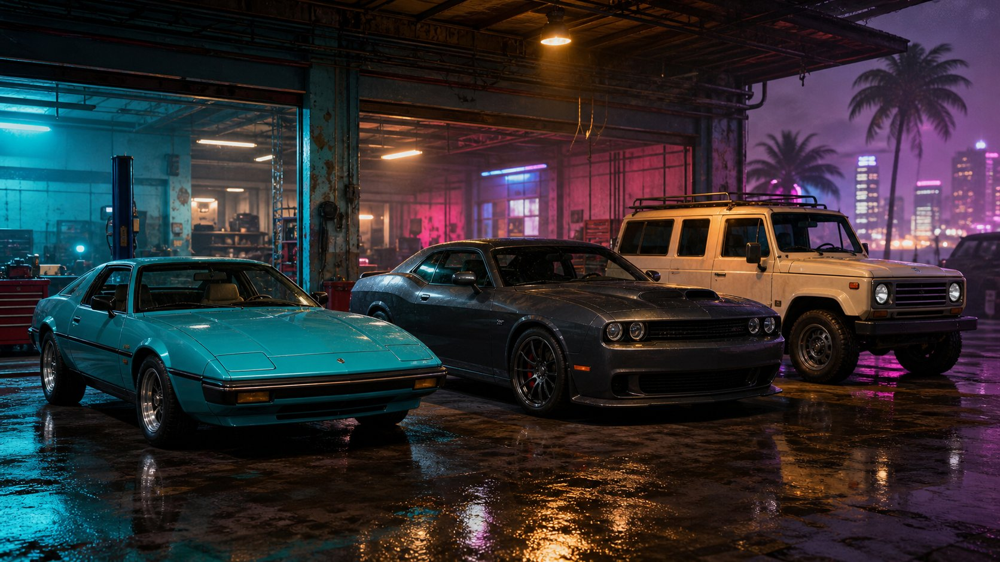
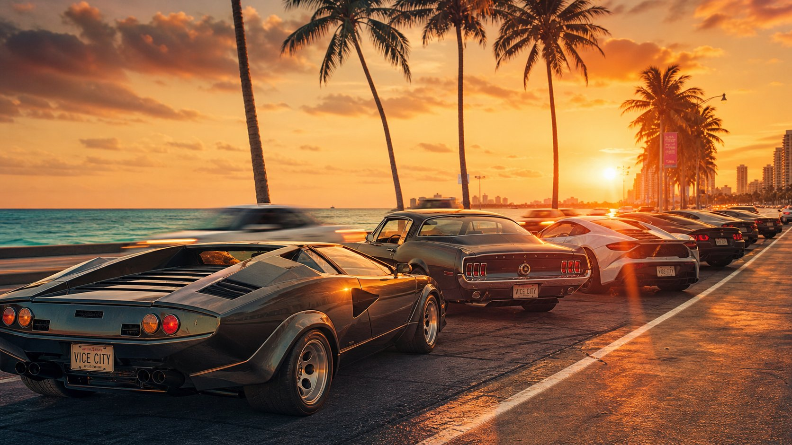

Tout-terrain & véhicules de service
Buggy et Enduro ont des noms dans le contenu Rockstar; d’autres catégories sont visibles ou repérées par des communautés.

VÉHICULES · GARAGE DE LEONIDA · ÉTAT DES SOURCES AU 18/11/2026
Des dizaines de silhouettes à repérer, quelques noms écrits dans le contenu Rockstar, et des reviews de conduite tout juste publiées. Le guide sépare les preuves, les observations et les identifications communautaires.
Rockstar montre et nomme certains véhicules dans ses contenus d’éditions, ses galeries et ses vidéos, mais ne publie pas un catalogue exhaustif ni des fiches publiques de vitesse, accélération ou adhérence. La presse a maintenant conduit une version de lancement; ses observations utiles sont attribuées à leurs auteurs. Les véhicules reconnaissables dans les images, les identifications de fans et les listes tirées de fuites restent des catégories distinctes.
| Niveau de preuve | Exemples / usage | Limite |
|---|---|---|
| Nom cité par Rockstar | Contenus d’édition : ’95 Grotti Cheetah, Vapid Ganado, Dinka Enduro, ’55 Vapid Stanier, Shitzu Squalo, Crest Kayak, ’67 Vapid Dominator Buggy. | Un nom et un bonus ne donnent pas leurs stats en jeu ni un roster complet. Le contenu dépend du pack ou de l’édition décrite. |
| Véhicule visible sur média officiel | Voitures, motos, véhicules tout-terrain, bateaux et aéronefs apparaissent dans les trailers ou captures Rockstar. | Une silhouette ne suffit pas toujours à identifier le nom de marque, la classe, la conduite ou la possibilité de pilotage. |
| Observation de review | Les critiques du 18/11 parlent de maniabilité différenciée, garages, personnalisation, systèmes de récupération et de vol. | Expérience et évaluations personnelles : citer l’auteur, et tester commandes/options dans sa propre partie. |
| Liste de fans, vidéo ou réseau social | Peut aider à retrouver un véhicule dans une image et signaler un détail à vérifier. | Pas une confirmation officielle; les listes gonflent parfois les comptes avec des variantes ou des marques déduites. |

Modèles explicitement cités, conduite telle que décrite par les critiques, vol, rangement et personnalisation.
Dinka Enduro et indices visuels séparés des avis sur la prise en main et les conseils de pilotage.
Squalo, kayak, remorques et navigation; listes fan et preuves Rockstar séparées.
Des critiques décrivent un pilotage jouable; roster de modèles et statistiques non établis.
Conseils d’essai, vulnérabilité du rotor rapportée, identifications de fans mises à part.
Buggy et Enduro ont des noms dans le contenu Rockstar; d’autres catégories sont visibles ou repérées par des communautés.
| Véhicule nommé | Catégorie générale | Contexte publié |
|---|---|---|
| ’95 Grotti Cheetah | Voiture sportive | Collection / pack de l’Ultimate Edition; détails de performance non publiés sur la page d’édition. |
| Vapid Ganado | Pickup/coupé utilitaire | Ganado Retro Build inclus comme contenu de personnalisation à l’Ultimate Edition. |
| ’67 Vapid Dominator Buggy | Buggy tout-terrain | Véhicule bonus mentionné dans le contenu Ultimate et associé à Paradise Garage. |
| Dinka Enduro | Moto tout-terrain | Véhicule associé au contenu Safehouse; aucune fiche de vitesse officielle trouvée. |
| ’55 Vapid Stanier | Berline classique | Vintage Vice City Pack de précommande selon les descriptions des éditions. |
| Shitzu Squalo · Crest Kayak | Bateau à moteur · kayak | Éléments nommés dans le contenu du pack; la page ne fournit pas un guide nautique de tous les modèles. |
Les reviews publiées le 18 novembre ajoutent des observations de conduite après les previews. GameSpot a trouvé que les véhicules avaient des comportements différenciés (légers et rapides, lourds ou plus faciles à placer), tout en signalant des difficultés personnelles à haute vitesse. D’autres critiques saluent le modèle de conduite, et IGN note en revanche une sensation de moto « raide et droite » par comparaison avec les épisodes précédents. Ce sont des ressentis de review, pas des mesures universelles.